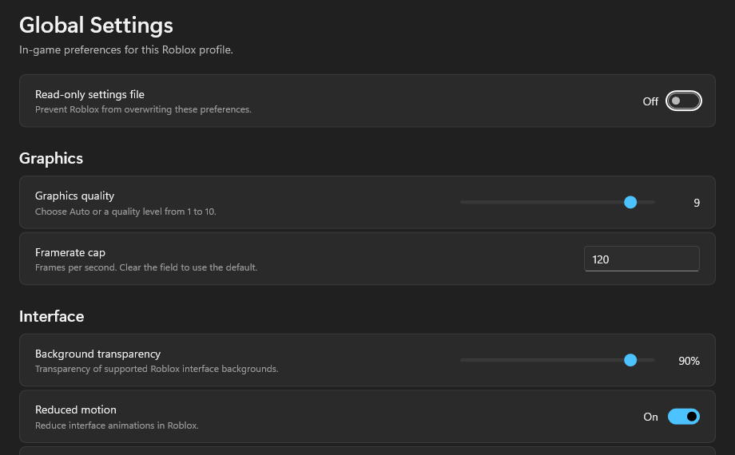
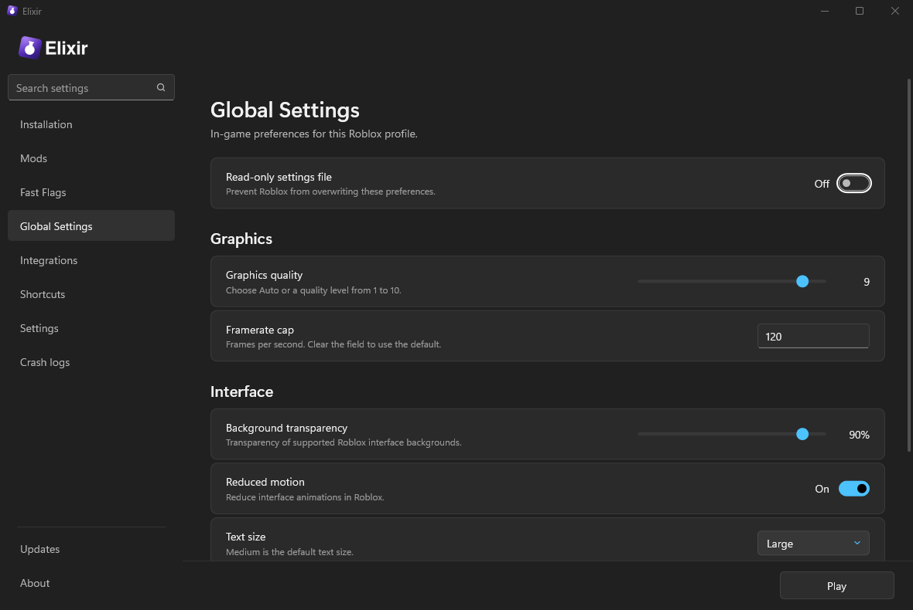
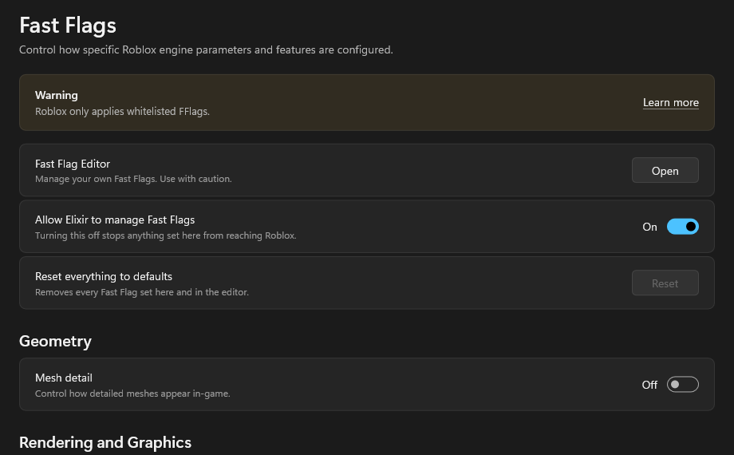
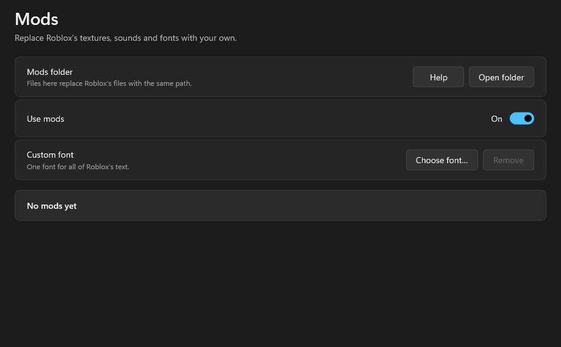
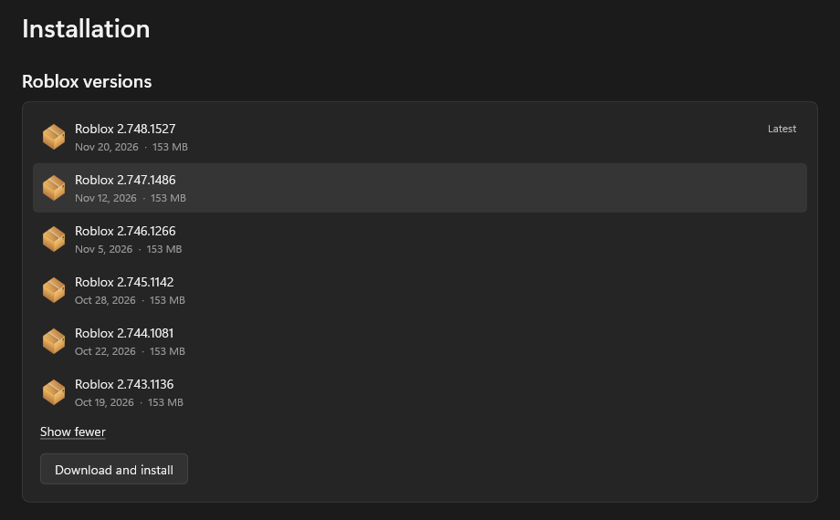
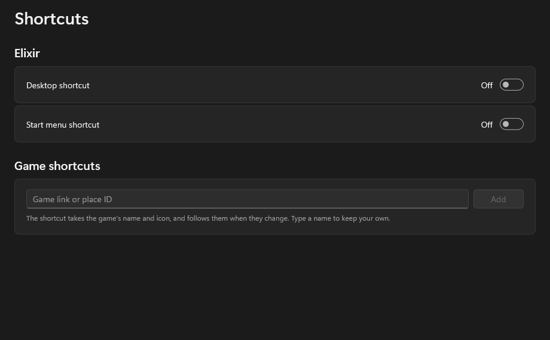

Global Settings
Frame rate cap, graphics quality, text size and mouse sensitivity, set before Roblox opens.

Elixir runs Roblox's Android app directly on Windows, without an emulator.
This site has ads, and one may open in a new tab when you click. The real download is a file named Elixir.exe from github.com. Anything else is an ad.

Frame rate cap, graphics quality, text size and mouse sensitivity, set before Roblox opens.

An editor with search, presets, import and export. It shows which flags Roblox will accept.

Replace Roblox's textures, sounds and fonts with your own. Roblox's installed files stay as they are.

Pick the Roblox version to install, update inside the app, or roll back.

Put a game on your desktop or Start menu with its own name and icon.

A program that runs the Android version of Roblox on a Windows PC. The Roblox app itself is not changed.
No. Elixir is an independent open-source project and is not affiliated with Roblox Corporation.
Elixir's source code is public under the Apache License 2.0, and the download here is built from it. Before Elixir installs Roblox, it checks that the app is signed by Roblox.
Elixir does not change Roblox's app or get around its sign-in or security. Roblox does not support Elixir either, so nobody can promise anything. Use it at your own risk.
64-bit Windows 10 or 11 and a graphics card with Vulkan.
Open an issue on GitHub. If Roblox closed with an error, the Crash logs page in the launcher has the report to attach.
Yes. Elixir has two official places: this site and its GitHub repository. Download Elixir only from them.